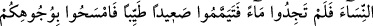

TEYEMMÜM VE GUSÜL
43- Ey îmân edenler! Siz sarhoş iken –ne söylediğinizi bilinceye kadar- cünüp
iken de –yolcu olan müstesnâ- gusül edinceye kadar namaza yaklaşmayın. Eğer
hasta veyâ yolculukta iseniz, yâhut sizden biriniz ayak yolundan gelirse, yâhut
kadınlara dokunup da (bu durumlarda) su bulamamışsanız o zaman temiz bir
toprakla teyemmüm edin: Yüzlerinize ve ellerinize sürün. Şüphesiz Allah çok
affedici ve bağışlayıcıdır.
Rivâyet edilir ki içki henüz mübah iken Abdurrahman b. Avf, yiyecek ve içecek
hazırlayıp sahâbenin ileri gelenlerinden bazılarını dâvet etti. Yediler, içtiler. Sarhoş
oldukları zaman akşam namazının vakti girince içlerinden birini kendilerine namaz
kıldırması için öne geçirdiler. O da namazda “Lâ” harflerini atarak Kâfirûn sûresini:
“De ki: Ey kâfirler! Sizin taptıklarınıza ben de taparım. Siz de benim taptığıma
taparsınız...” mânâsına gelecek şekilde yanlış okudu. Bunun üzerine bu âyet nâzil oldu.
Âyetin nüzûlünden sonra namaz vakitlerinde içki içmez oldular. Yatsıyı kıldıktan
sonra içer, sabahleyin de sarhoşlukları geçmiş ve ne dediklerini bilir bir vaziyette
uyanırlardı. Daha sonra içkinin haram olduğuna dâir âyet nâzil oldu. Âyette: “Sarhoş
iken namaz kılmayın” denilmeyip bunun yerine: “Namaza yaklaşmayın” denilmesi bu
yasağın çok şiddetli olmasından kaynaklanmaktadır.
“et-Teysîr”de şöyle deniyor: Burada yasaklanan namazın kendisi değildir. Çünkü o
bir ibâdet olup yasaklanmaz. Bilakis gereği gibi namaz kılmayı imkansız hâle getiren
sarhoş olma yasaklanmıştır.
İmam Ebû Mansur (rh.a.) şöyle diyor: Hz. Peygamber (s.a.v.)’in “Efendisinden
kaçan kölenin ve kocasına karşı hırçınlık gösteren kadının namazı yoktur!”[40] hadîsi
de böyledir. Burada da yasaklanan şey namaz değil, bilakis efendiden kaçmak ve
hırçınlıktır. Çünkü efendiden kaçmak, hırçınlık ve sarhoşluk bir farzın üzerimizden
düşmesinde bir âmil değildir. O zaman âyetin mânâsı şöyle olur: Sarhoşluk hâlinde
namaza başlamadan önce ne dediğinizi bilene kadar namaza yaklaşmayın. Çünkü ancak
böyle bir denemeyle namazda okuyacaklarını bilip bilmedikleri belli olur.